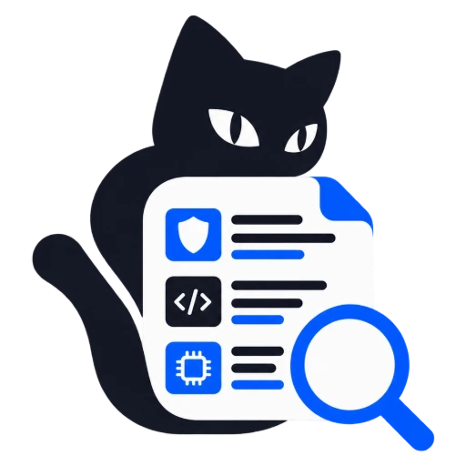
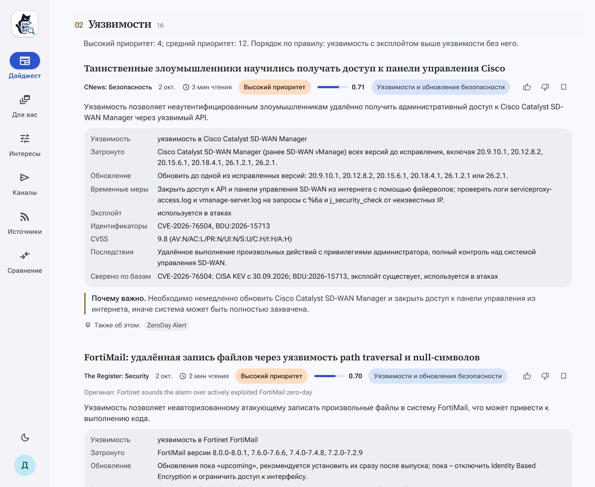
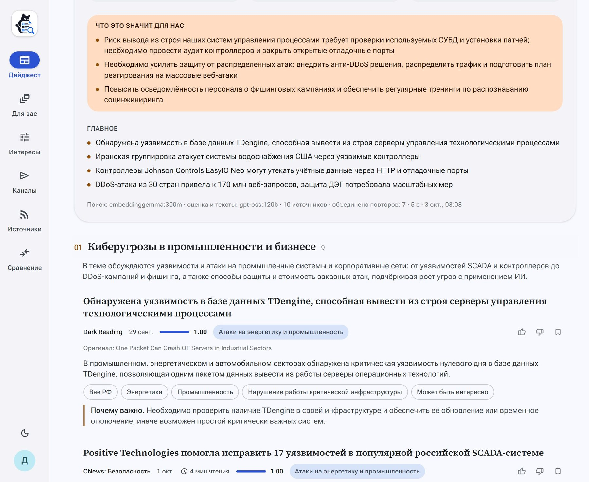
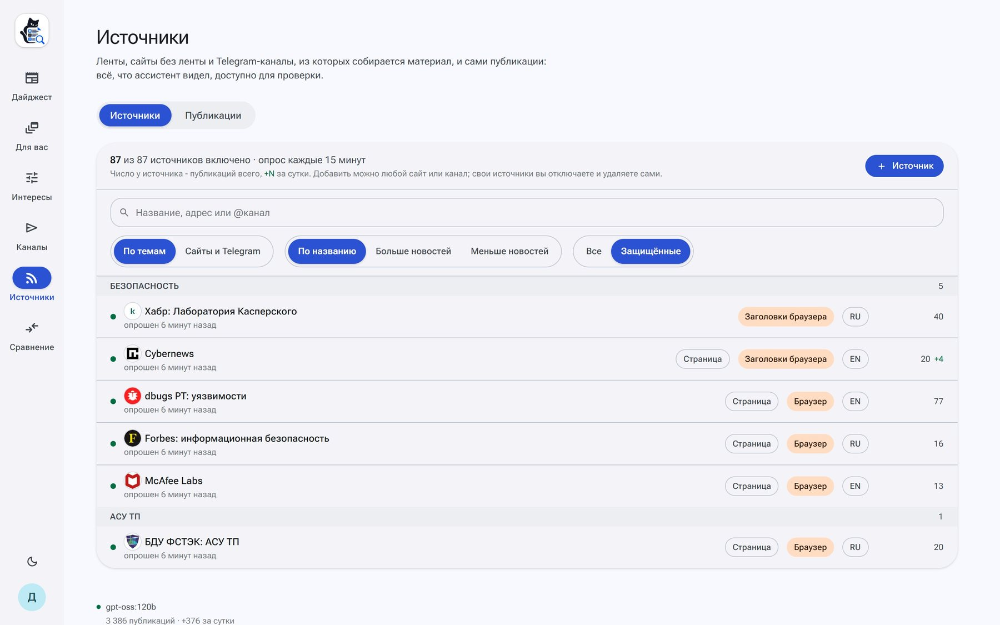
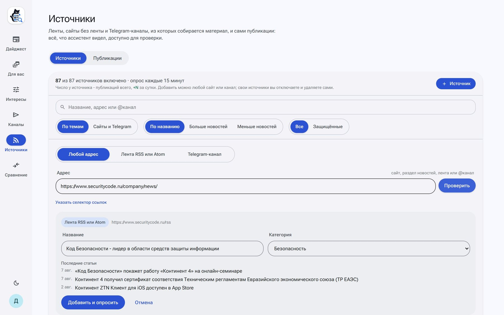
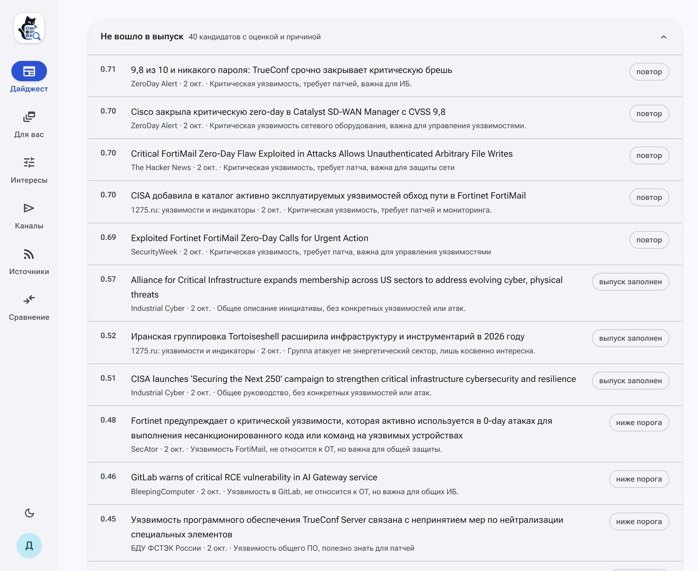

Tail&GrepВыпуск специалисту за сутки и руководству за неделю собирается за одну-четыре минуты. Хакатон «ИИ-ассистенты для энергетики», полуфинал. Команда misis-mojarung.
в месяц стоит час мониторинга в день у трёх специалистов: медиана SOC-аналитика 149 000 ₽, с взносами около 1 170 ₽ за час, плюс 3 часа в неделю на сводку руководству.
Хабр Карьера, I полугодие 2026. Часы - допущение, пока их не замерили у аналитика.
| Работа аналитика | Что делает ассистент |
|---|---|
| Поиск и сбор | 88 источников, из списков датасета все 62; сайты без ленты читаются как страницы новостей, защищённые - лестницей способов до браузера в стеке и прокси; любой читатель добавляет любой адрес |
| Отбор | профиль читателя: интересы, исключения, порог; 60 кандидатов оценивает модель, у каждой записи и у каждого отказа есть причина |
| Приоритизация | правило датасета: атака на энергетику и промышленность РФ выше всех, уязвимость с эксплойтом выше; эксплойт сверяется с CISA KEV и БДУ ФСТЭК |
| Подача | два выпуска: специалисту подробно за сутки, руководству тезисно за неделю; Markdown и DOCX, из браузера или одной командой в консоли |
Чего пока нет: сравнения с живым аналитиком на одной неделе. Комплект для него готов, разметки человеком ещё нет, поэтому цифр сравнения мы не приводим.

Специалисту, за сутки атаки и уязвимости карточками, приоритет по правилу датасета, «Сверено по базам»: CISA KEV и БДУ ФСТЭК

Руководству, за неделю «Что это значит для нас», записи в одно-два предложения без номеров CVE и CVSS, двенадцать признаков датасета
Стек поднимается одной командой, выпуск без браузера - второй:
Файлы .md и .docx в out/. Веб открывается без экрана входа.

Из списков датасета читалось 42 из 62, теперь 62 из 62; бюллетени Broadcom - из JSON, по которому их рисует страница.
Ступень и причина видны у источника. Защита от SSRF работает на каждой ступени.

@канал.На стенде: securitycode.ru/company/news/ определён как лента за 8,1 с, t.me/dataleak как канал за 1,1 с.

lookup_vulnerability: каталог CISA KEV и БДУ ФСТЭК. Номера, о которых она не спросила, граф проверяет сам.21 пример датасета прогнан через решение: тип записи совпал в 6 из 6, приоритет в 4 из 6.
.env, код не трогается| Модель | Где работает | Сборка, с | Совпало с первым прогоном |
|---|---|---|---|
| gpt-oss:120b | облако Ollama, стенд и примеры | 120 | 20 из 20 |
| gpt-oss:120b, повтор | облако Ollama | 155 | 18 из 20 |
| gemma4:31b | облако Ollama | 111 | 17 из 20 |
| gpt-oss:20b | облако Ollama | 237 | 12 из 20 |
| nemotron-3-nano:30b | облако Ollama | 95 | 9 из 20 |
| qwen3.5:9b | в стеке, видеокарта 8 ГБ | 165 | 13 из 20 |
| без модели | автономный режим | 2 | 13 из 20 |
Разделы, карточки, приоритеты и проверка работают на всех. Два прогона одной gpt-oss:120b совпадают в 18 записях из 20 - это шум самой модели. Ollama и OpenAI-совместимый API: Yandex AI Studio, vLLM. По умолчанию в режиме с моделью - локальная Qwen3.6 35B-A3B в Ollama стека.
offline_bundle.sh save: 7 образов ядра 4,7 ГБ и модели 1,6 ГБ за 4 мин 21 с.load в пустой каталог за 3 мин 29 с; копия поднялась без сети, проверочный сценарий прошёл целиком.api - «Network is unreachable».| Конфигурация | Сборка | Выпусков в час |
|---|---|---|
| Без языковой модели | 0,5 с | тысячи |
| qwen3.5:9b, RTX 5070 12 ГБ | 81-102 с | 35-44 |
| qwen3.5:0.8b на процессоре ноутбука | 731,5 с | 4-5 |
Qwen3.6 35B-A3B и gpt-oss-120b локально ждут замера на карте NVIDIA: команда замера готова.
в месяц стоит ручной мониторинг: час в день у трёх специалистов и сводка руководству. При 30 минутах - 52 000 ₽, при двух часах - 163 000 ₽.
в месяц с ассистентом: тариф модели 1 670 ₽, сервер 6 137 ₽, сопровождение 2 350 ₽ и 15 минут в день на чтение выпуска 18 500 ₽.
в год на одну команду. Вложений на старте нет, окупаемость с первого месяца.
Токены замерены на неделе снимка: выпуск специалисту - 166 511 на вход и 16 127 на выход, около 2,9 ₽; руководству - около 1,9 ₽. Ассистент забирает поиск, отбор, приоритет и сводку; чтение выпуска остаётся у человека.
Интерфейс на localhost:8080, консоль - docker compose run --rm cli digest, примеры выпусков - examples/. Репозиторий: git.codenrock.com/codenrock/ii-assistenty/misis-mojarung/assistent-dlya-sozdaniya-it-ib-daydzhestov